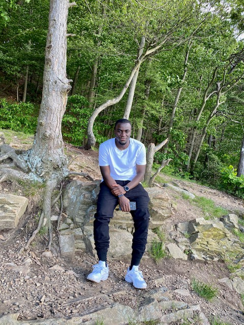

About 160 miles northwest of Tahiti lies one of the most beautiful islands in the world -- romantic, exotic Bora Bora. Bora Bora's most stunning feature is its blue, jewel-toned lagoon and the twin peaks which jut from it, creating changing, gorgeous views throughout the day.
Overwater Bungalows in Bora Bora
May 8, 2021
Fig1.Overwater Bungalows, Bora bora
Famously known around world and offering a unique experience, the overwater bungalows made of wood and pandanus with high-end standards provide the best Bora Bora experience you can dream of. Imagine yourself waking up over the crystal clear blue lagoon, jumping from your deck itoto the water or admiring the fish through the glass floor. Each island and resort has their own specific bungalows - from intimate ones to luxury villas with plunge pool.
Sharks in body of water
May 8, 2021
Fig2.Sharks in water
Out of all the unique beauties of Bora Bora such as the cottages above the water, the marvelous sandy beaches, and the mountain Otemanu, one of the most favorite among tourists are the sharks.
Author

Joseph Ofori, Front-End Web Developer student at Udacity
Joseph is an aspiring Front-End Web Developer from the United States, residing in Frederick, MD. He loves being active, watching sports, coding, and is currently improving his programming skills in order to land his first job in Web Development.